Una settimana dopo aver salito l'ardito Spic in val Resia, torno nello stesso luogo con Lisa, Christian e Brendon per salire su Vetta Criuze, sfruttando uno dei tre accessi al Pusti Gost da me visti la volta precedente.
Dopo mezz'ora siamo già nel canale Lusument.
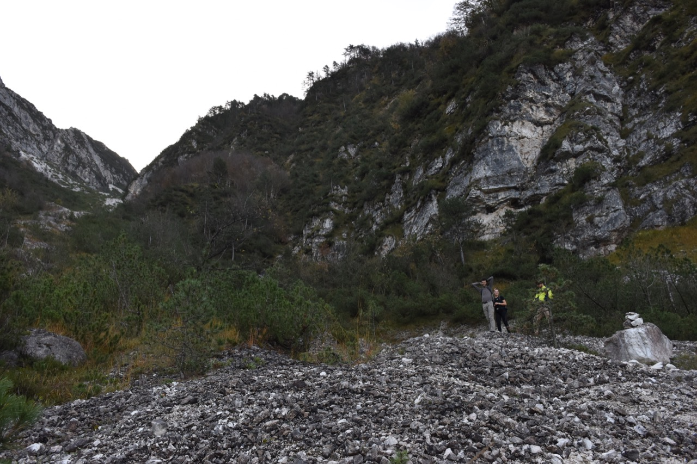Scelgo di salire per l'accesso più basso.
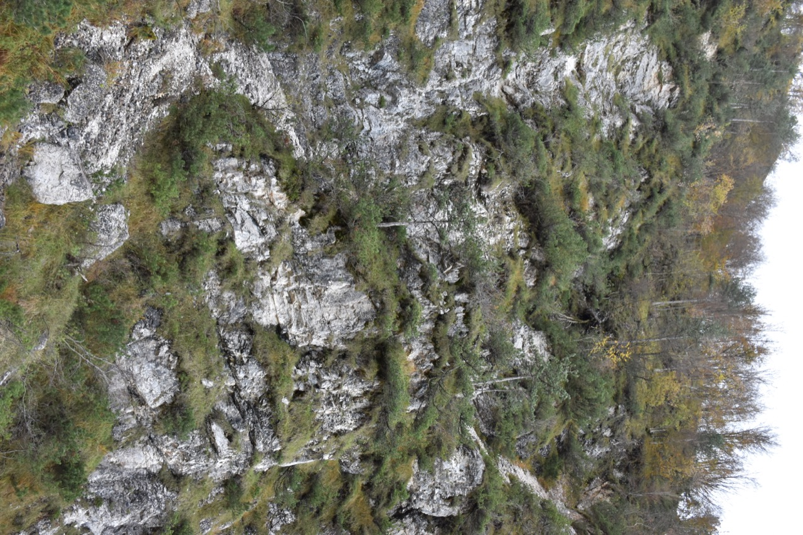 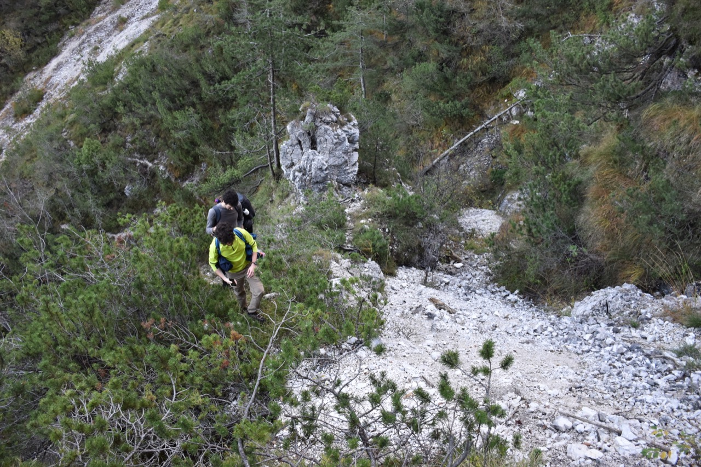 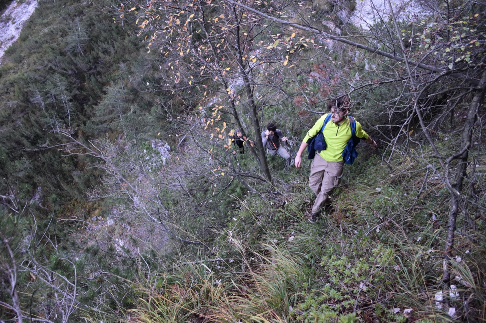Nella prima parte del Pusti Gost, la più ripida, c'è un po' di traccia, che seguiamo. Si sale poi seguendo sempre il crinale Nord-Ovest.
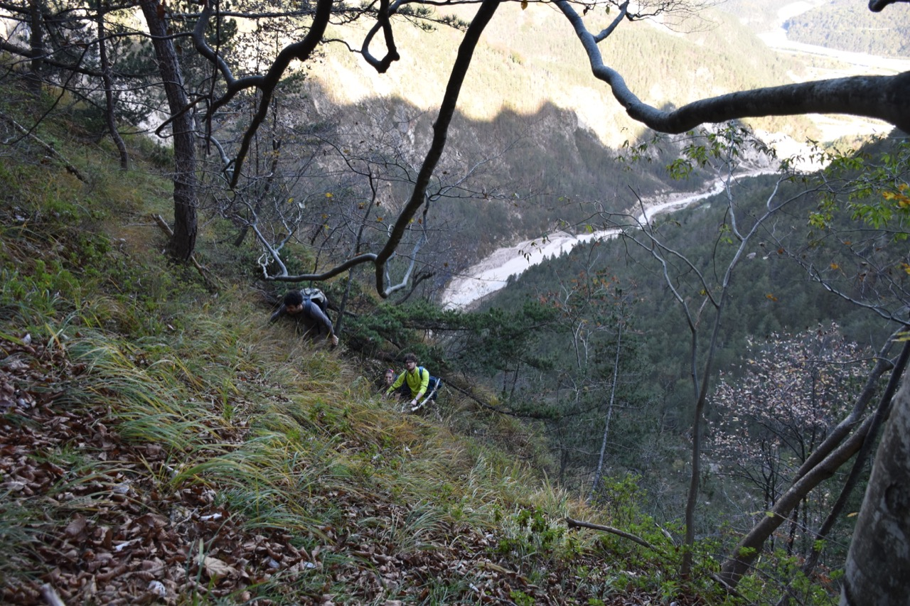In prossimità della quota 1133 traversiamo verso destra per portarci nei pressi della cresta, dove si ritrova la traccia.
Il panorama si apre: in foto il Plauris, Pale di Misdì, Palòn dei Zábus.
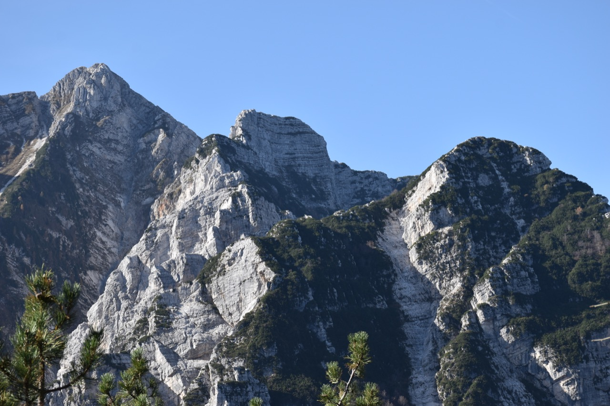Dalla cresta si vede anche la forcella del vallone del rio Puntuz, con Vetta Criuze alla sua destra. A sinistra, i risalti di cresta che terminano con la quota 1320 (come Vetta Criuze).
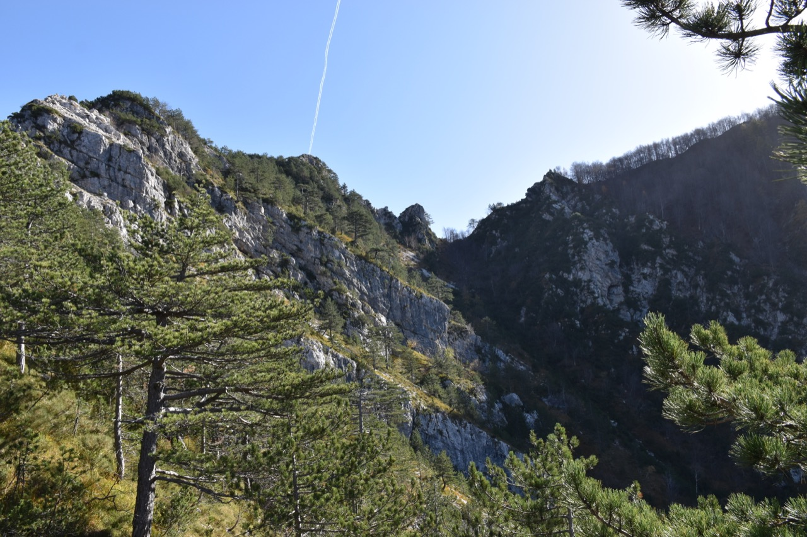La traccia, ben evidente fino a questo punto, non è più chiara. Proprio nel momento del bisogno le relazioni non danno alcun aiuto. I miei amici si fermano qui, io scendo un po' nel bosco e immediatamente trovo la traccia, peraltro ben marcata, che porta nel vallone. Già che ci sono salgo in fretta e furia alla forcella e poi su Vetta Criuze.
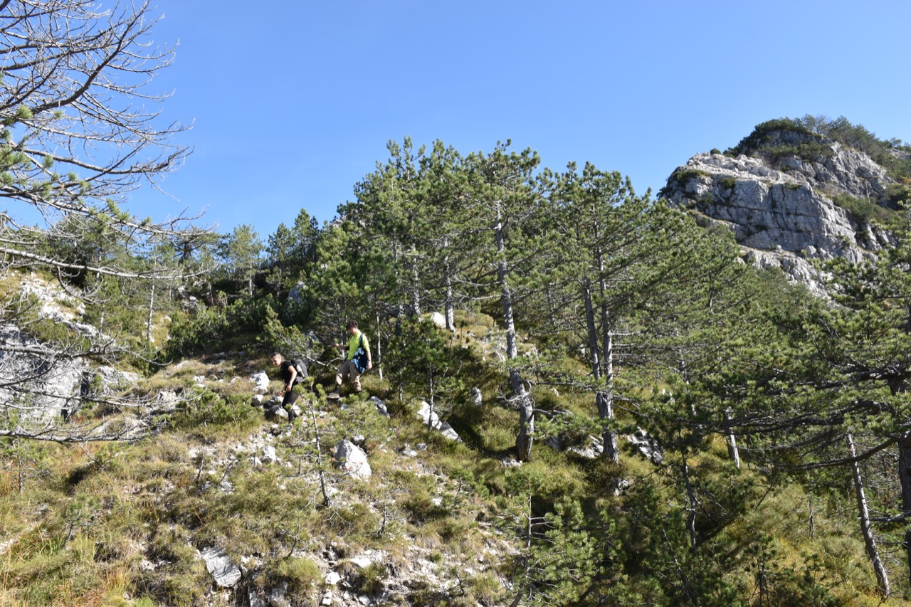L'arrivo in forcella.
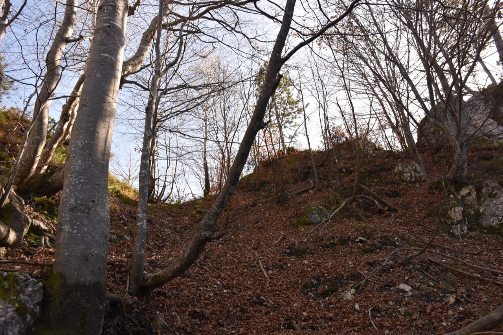Verso la cresta del Pusti Gost, che divide i valloni Puntuz e Lusument. I miei amici mi aspettano sulla seconda quota della cresta (da sx; da prima è la quota 1133), sulla perpendicolare del monte Uarchèc.
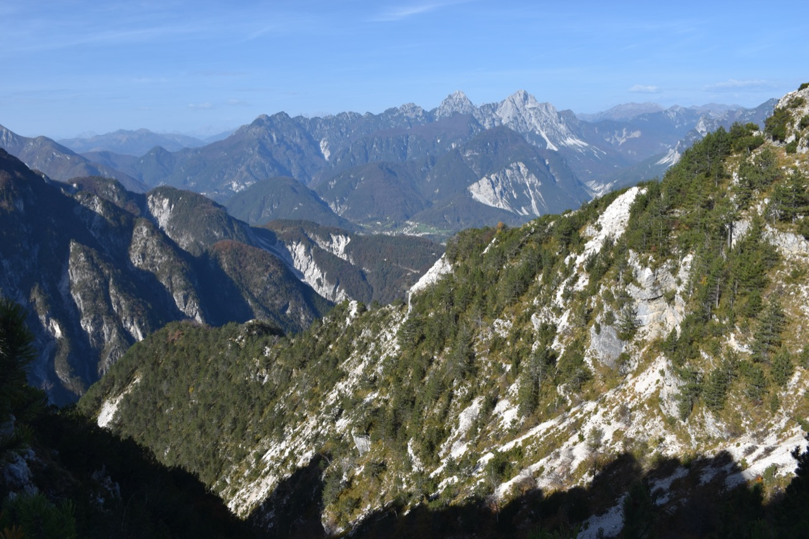In primo piano la quota 1320 a nord della forcella. Dietro si notano Pisimoni, Çuc dal Bôr, Cozarèl.
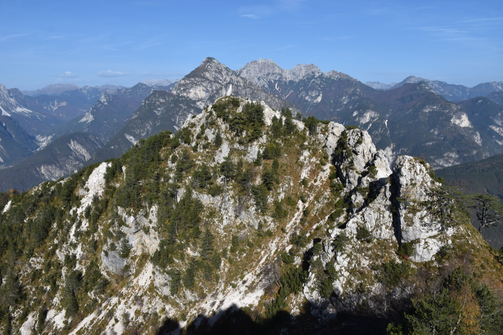Non si può fare a meno di osservare il complesso Pisimoni; evidente il cengione che da Forcje Diame porta alla Plagne (ossia i prati sommitali).
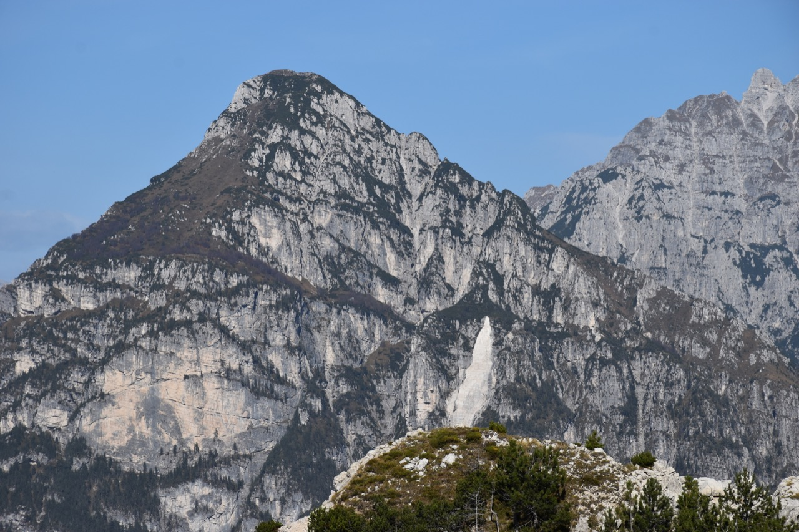Verso la val Resia. In centro foto, con colori autunnali, il monte Plechie: alla traversata fino al rio Nero ci penseremo un'altra volta.
La Puartate laggiù, ben evidente; molto elegante visto da qui il Ciuc di Vallisetta.
Torniamo indietro. Do uno sguardo allo Spic salito una settimana prima, da qui poco attraente.
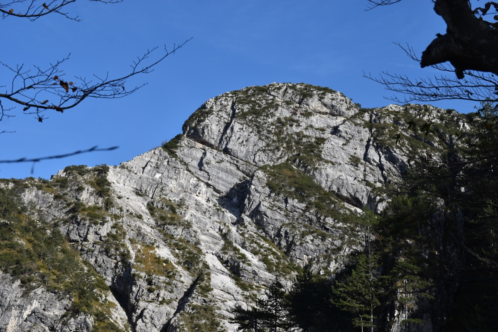Gita finita, rinfreschiamo le membra nel Resartico. Bellissima la vista sul Pisimoni, un mondo tutto a sé.
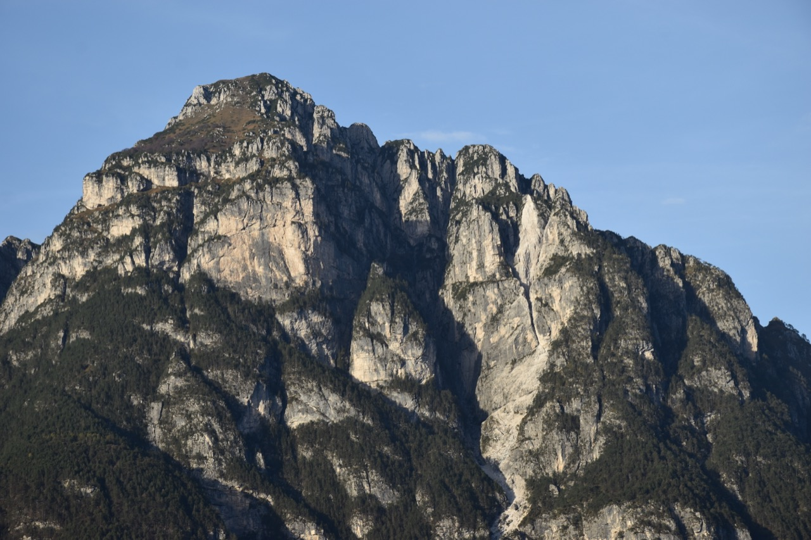